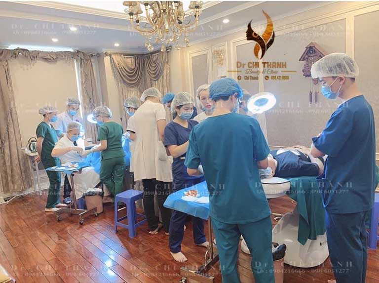
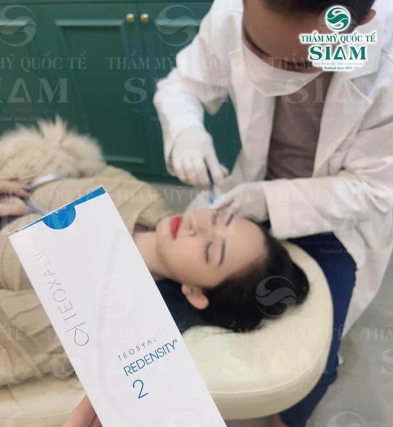
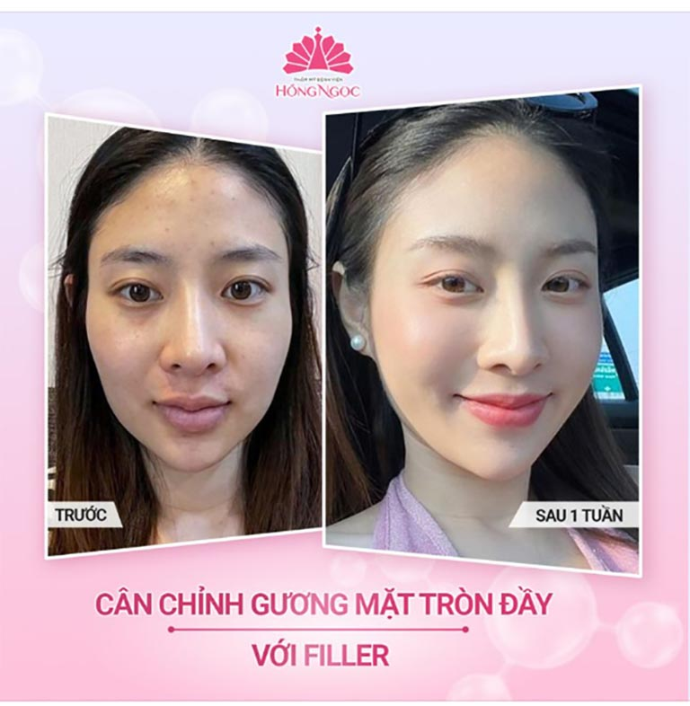
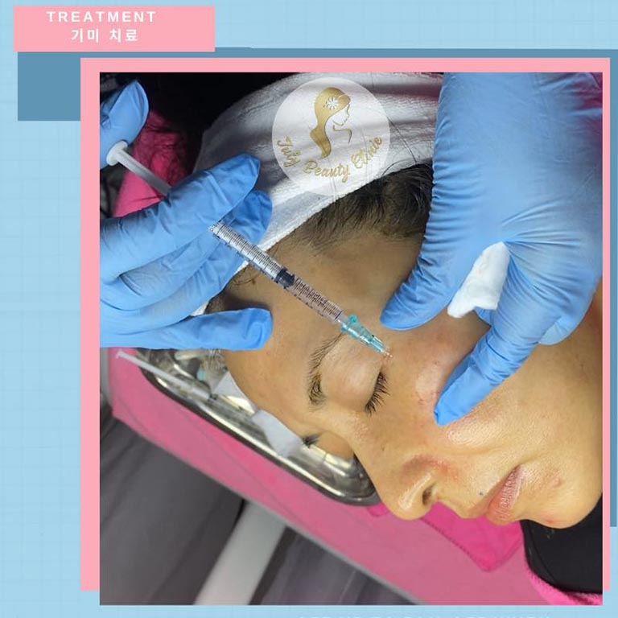

10 Địa chỉ tiêm Filler tại Hà Nội đẹp, an toàn, chất lượng
Mối lo âu của bạn về các địa chỉ tiêm filler ở Hà Nội an toàn, chất lượng nhất sẽ được giải đáp bởi nội dung sau đây. HaNoiReview sẽ nhanh chóng cập nhật về các địa chỉ tiêm filler an toàn, giá rẻ và hiệu quả nhất để bạn có thể dễ dàng đưa ra lựa chọn của mình.
Hà Nội là thành phố Thủ Đô cũng là nơi tập trung nhiều cơ sở làm đẹp hàng đầu nước ta. Nơi đây cũng nổi tiếng với hàng loạt các địa chỉ tiêm filler đẹp, chất lượng được nhiều tín đồ làm đẹp gợi ý trong thời gian gần đây. Tuy nhiên, vì đây là kỹ thuật tiêm tinh chất trực tiếp và cơ thể nên rất cần sự lựa chọn nghiêm ngặt khi có quyết định thẩm mỹ.
Top 10 Địa chỉ tiêm filler ở Hà Nội giá tốt, kỹ thuật viên giỏi
Đây là các spa, thẩm mỹ viện tại Hà Nội có nhiều năm hoạt động trong lĩnh vực thẩm mỹ. Các cơ sở này cũng thành công thực hiện hàng trăm ca tiêm filler cho khách hàng và đều nhận được những đánh giá tích cực. Hãy cùng khám phá ngay để không làm mất thời gian của bạn khi cần tìm các địa chỉ tiêm filler ở Hà Nội uy tín nhất.
Thẩm mỹ viện Hoàng Tuấn
Như đã đề cập, dịch vụ tiêm filler đang trở thành một xu hướng làm đẹp trong thị trường thẩm mỹ. Trong đó, Thẩm mỹ viện Hoàng Tuấn cũng đã và đang vươn mình giúp các chị em phụ nữ chạm đến vẻ đẹp hoàn mỹ bởi chính các dịch vụ tiêm filler mà đơn vị đã cập nhật, nghiên cứu và triển khai áp dụng cho đông đảo khách hàng có nhu cầu.
Điều đặc biệt tại Thẩm mỹ viện Hoàng Tuấn chính là việc cam kết sử dụng các sản phẩm filler chính hãng đến từ các thương hiệu có tiếng trong lĩnh vực. Các sản phẩm này cũng được chọn lọc và đều có kiểm định quốc tế về mức độ an toàn, có độ tương thích với cơ thể cao và mang lại hiệu quả tối ưu trong các phương pháp làm đẹp tương ứng.
Quy trình tiêm filler được bắt đầu với các khâu tư vấn và hỗ trợ kiểm tra tình trạng da, tình trạng sức khỏe kỹ càng. Điều này nhằm đảm bảo rằng bạn có đủ điều kiện để có thể sử dụng các sản phẩm filler sao cho phù hợp nhất mà không để lại biến chứng hay có các phản ứng không mong muốn.
Trong quá trình tiêm filler, tất cả kỹ thuật viên đều đeo bao tay y tế. Các dụng cụ tiêu hao khi tiêm filler để chỉ áp dụng sử dụng một lần duy nhất trên một khách hàng. Cam kết không tái sử dụng và không có tình trạng nhiễm khuẩn làm ảnh hưởng đến sức khỏe của khách hàng.
Toàn bộ các dịch vụ tiêm filler tại Thẩm mỹ viện Hoàng Tuấn đều được bảo hành lên đến 90 ngày. Khi có bất kỳ vấn đề gì, bạn đều có thể liên hệ đến Thẩm mỹ viện Hoàng Tuấn để được hỗ trợ và khắc phục kịp thời để không ảnh hưởng đến kết quả làm đẹp.
Đội ngũ kỹ thuật viên có kinh nghiệm và được đào tạo bài bản trong các kỹ thuật tiêm filler và nắn chỉnh hình dáng sao cho hài hòa nhất với mỗi đường nét, cá tính khác nhau của mỗi khách hàng. Bên cạnh đó, họ còn là những người luôn sẵn sàng lắng nghe, tư vấn để có thể giải đáp mọi vướng mắc mà bạn có thể gặp phải.
Chính sự tận tâm, đầu tư về sản phẩm cũng như việc đào tạo bài bản đội ngũ nhân sự đã giúp cho Thẩm mỹ viện Hoàng Tuấn nhận được nhiều đánh giá cao và sự hài lòng của khách hàng. Đây chính là nơi bạn có thể trao niềm tin và nhận lại được vẻ đẹp hoàn hảo khi tìm kiếm các địa chỉ tiêm filler hàng đầu ở Hà Nội.
Thông tin liên hệ:
- Địa chỉ: 1/487 Hoàng Quốc Việt, Q. Cầu Giấy, Hà Nội
- Điện thoại: 0961 888 656
- Website: thammyhoangtuan.vn
- Facebook: FB.com/ThamMyHoangTuan
Phòng khám da liễu thẩm mỹ Thái Hà
Bạn đang băn khoăn khi không biết địa chỉ tiêm filler nào ở Hà Nội có thể tin tưởng? Phòng khám da liễu thẩm mỹ Thái Hà là một địa điểm lý tưởng để bạn có thể hoàn toàn an tâm khi sử dụng các phương pháp làm đẹp này.
Là một trong các phòng khám da liễu thẩm mỹ đã có hơn 10 năm kinh nghiệm, Phòng khám da liễu thẩm mỹ Thái Hà đã và đang nhận được hàng loạt các đánh giá tốt cũng như cảm tính của khách hàng trong thành phố. Nhờ đó, danh tiếng cũng như sự uy tín của phòng khám đang ngày càng lớn mạnh trong thị trường thẩm mỹ Hà Nội.
Phòng khám da liễu thẩm mỹ Thái Hà có thế mạnh về các phương pháp thẩm mỹ nội khoa. Trong đó, dịch vụ trẻ hóa bằng kỹ thuật tiêm filler cũng được đông đảo khách hàng lựa chọn. Đây là phương pháp có kiểm định và chứng nhận an toàn bởi tổ chức quốc tế FDA, trong việc cải thiện hiệu quả các nếp nhăn, những khuyết điểm cơ bản trên gương mặt và một số bộ phận của cơ thể.
Trong đội ngũ nhân sự chuyên nghiệp tại Phòng khám da liễu thẩm mỹ Thái Hà, Bác sĩ Thái Hà chính là người sáng lập và đồng hành cùng khách hàng. Với hơn 20 năm làm nghề y tế thẩm mỹ, bác sĩ đã được tiếp cận với nhiều kỹ thuật làm đẹp tiên tiến để góp phần mang lại kết quả hài lòng nhất cho khách hàng.
Nếu bạn là một người bận rộn, thì Phòng khám da liễu thẩm mỹ Thái Hà sẽ nhanh chóng hoàn thiện quá trình tiêm filler chỉ trong vòng 15 phút. Phòng khám cam kết đảm chất lượng đồng đều ở mức cao nhất trên mọi trường hợp du trong thời gian ngắn. Quy trình thực hiện tiêm filler hoàn toàn an toàn, khép kín. Bạn sẽ không cảm thấy đau, không chảy máu và hoàn toàn không gây ra các phản ứng phụ khi cũng như không cần mất thời gian nghỉ dưỡng sau khi làm đẹp.
Các sản phẩm filler được sử dụng tại Phòng khám da liễu thẩm mỹ Thái Hà đều có nguồn gốc tại Thụy Sĩ. Đồng thời, phòng khám cũng ưu tiên sử dụng loại filler Teoxane, bởi sản phẩm có chứng nhận từ FDA Hoa Kỳ cũng như được cấp phép lưu hành bởi Bộ Y tế. Chính khách hàng cũng sẽ được kiểm tra sản phẩm trước khi kỹ thuật viên hoặc các bác sĩ thực hiện tiêm. Điều này tạo nên sự an tâm tuyệt đối cho khách hàng khi đã chọn tiêm filler làm đẹp tại Phòng khám da liễu thẩm mỹ Thái Hà.
Vây, còn chần chừ gì nữa mà không đến Phòng khám da liễu thẩm mỹ Thái Hà để loại bỏ các khuyết điểm gây mất thẩm mỹ trên cơ thể. Bác sĩ Thái Hà cùng đội ngũ nhân sự chuyên nghiệp sẽ không bao giờ làm bạn phải thất vọng.
Thông tin liên hệ:
- Địa chỉ: 8 Ngõ 26 Hoàng Cầu, P. Chợ Dừa, Q. Đống Đa, TP. Hà Nội
- Điện thoại: 0967 571 166
- Website: drthaiha.vn
- Facebook: FB.com/1636296723329417
GỢI Ý: 10 Địa chỉ nâng mũi tại Hà Nội uy tín, an toàn, bác sĩ giỏi
Thẩm mỹ viện Đông Á
Nổi tiếng là thẩm mỹ viện ở Hà Nội tích cực chuyển giao các phương pháp làm đẹp tiên tiến từ Anh, Mỹ, Hàn, … để áp dụng làm đẹp tại nước nhà, Thẩm mỹ viện Đông Á được tin chọn là cơ sở làm, đẹp thẩm mỹ chất lượng hàng đầu. .
Tại Thẩm mỹ viện Đông Á, dịch vụ tiêm filler cũng được đông đảo khách hàng tin dùng. Với các tiêu chí đảm bảo chất lượng, an toàn và có hiệu quả làm đẹp cao, Thẩm mỹ viện Đông Á đã trở thành địa chỉ tiêm filler thân thiết của nhiều chị em ở Hà Nội cũng như các vùng lân cận.
Bạn có thể hoàn toàn an tâm khi sử dụng dịch vụ này tại đây, vì Thẩm mỹ viện Đông Á được đích thân Bộ Y Tế cấp giấy phép hoạt động từ nhiều năm. Các phương pháp tiêm filler cho đến các kỹ thuật, công nghệ ứng dụng tại thẩm mỹ viện đều có kiểm định nghiêm ngặt.
Đồng thời, với đội ngũ bác sĩ thẩm mỹ hàng đầu được đào tạo bài bản trong nước và quốc tế, Thẩm mỹ viện Đông Á tự tin tạo nên các dịch vụ tốt nhất cho mọi khách hàng có nhu cầu. Điều này được chứng minh bởi khả năng chuyên môn cao, phong cách làm việc chuyên nghiệp cũng như số năm kinh nghiệm nhất định của từng bác sĩ đang công tác tại Thẩm mỹ viện Đông Á.
Để mang đến những nét đẹp đúng xu hướng và đúng nhu cầu, Thẩm mỹ viện Đông Á cũng như đội ngũ đã không ngừng học hỏi để cập nhật và tiếp cận các phương pháp, kỹ thuật làm đẹp mới nhất theo từng giai đoạn. Nhờ đó, sự phát triển của Thẩm mỹ viện Đông Á luôn đồng hành cùng sự hài lòng trong mỗi khách hàng sau khi hoàn thiện các dịch vụ làm đẹp, thẩm mỹ tại đây.
Thông tin liên hệ:
- Địa chỉ: 93 Bạch Mai, Q. Hai Bà Trưng, TP. Hà Nội
- Điện thoại: 0962.77.88.66
- Website: benhvienthammydonga.vn
Bệnh viện 108 Hà Nội
Tiêm filler là một phương pháp sử dụng chất làm đầy để cải thiện các khuyết điểm như nếp nhăn, tạo sống mũi, căng da, … Dù là sử dụng thủ thuật đơn giản, những bác sĩ bác sĩ, kỹ thuật viên cũng cần có kinh nghiệm và chuyên môn.
Đồng thời, các địa chỉ tiêm filler tại Hà Nội cũng cần tuân thủ các quy định an toàn và sử dụng các sản phẩm chất lượng để đảm bảo sức khỏe cho người sử dụng. Và Khoa phẫu thuật thẩm mỹ của Bệnh viện 108 Hà Nội chính là một cơ sở đáp ứng tốt các tiêu chí đó.
Là một trong các chuyên khoa trực thuộc Bệnh viện 108 Hà Nội – Một cơ sở y tế cộng đồng đáng tin cậy chuyên cung cấp các dịch vụ thăm khám, điều trị các vấn đề y tế cho người dân Hà Nội, khoa cũng là nơi hội tụ nhiều bác sĩ có chuyên môn cao và kinh nghiệm nhiều năm trong lĩnh vực thẩm mỹ và y tế nói chung.
Cơ sở vật chất của khoa được phát triển đồng bộ cùng các khoa khác thuộc Bệnh viện 108 Hà Nội. Mọi trang triết bị và máy móc cũng như các vật dụng, sản phẩm đều tuân thủ tiêu chuẩn an toàn, được khử trùng nghiêm ngặt và bảo quản đúng cách. Khoa sử dụng các sản phẩm filler chính hãng có chứng nhận an toàn từ các tổ chức có thẩm quyền quốc tế. Qua quá trình nghiên cứu, kiểm nghiệm, filler do khoa cung cấp đã thành công làm đẹp cho hàng ngàn khách hàng và đem lại kết quả hoàn mỹ.
Các sản phẩm filler tại Bệnh viện 108 Hà Nội khi sử dụng cho khách hàng đều nguyên vẹn, nguyên seal. Cam kết không pha trộn và không sử dụng các loại filler không có nguồn gốc xuất xứ rõ ràng trên thị trường. Chính khách hàng cũng có thể yêu cầu với bác sĩ để được kiểm tra sản phẩm trước khi tiến hành tiêm để có sự an tâm nhất định. Các phương pháp tiêm filler tại Bệnh viện 108 Hà Nội được thực hiện bởi bác sĩ có kinh nghiệm. Chính vì thế, quá trình tiêm hoàn toàn không đau, không sưng, không chảy máu và khách hàng cũng không mất thời gian nghỉ dưỡng sau khi tiêm.
Vậy, nếu bạn đang tìm kiếm các địa chỉ tiêm filler chất lượng nhất ở Hà Nội, thì việc tham khảo qua các dịch vụ tại Bệnh viện 108 Hà Nội là điều cần thiết. Hãy đến để có được những trải nghiệm an toàn, hiệu quả với mức giá phải chăng nhất.
Thông tin liên hệ:
- Địa chỉ: 1B Trần Hưng Đạo, P. Bạch Đằng, Q. Hai Bà Trưng, Hà Nội
- Điện thoại: 0789 888 108
- Website: benhvien108.vn
- Facebook: FB.com/537213673082341
GỢI Ý: 10 Địa chỉ thu gọn cánh mũi tại Hà Nội uy tín bác sĩ tốt
Dr. Chí Thanh Beauty & Clinic
Khi nhắc đến các địa chỉ tiêm filler nổi tiếng tại Hà Nội, nhiều khách hàng đã không ngần ngại nhắc đến Dr. Chí Thanh Beauty & Clinic. Được biết đây là một trong các cơ sở làm đẹp và cung cấp các dịch vụ thẩm mỹ chuẩn y khoa được nhiều người tin tưởng, Dr. Chí Thanh đã từng bước chiếm cảm tình của khách hàng bằng chính những lợi thế vượt trội.
Dịch vụ tiêm filler tại Dr. Chí Thanh Beauty & Clinic được đông đảo khách hàng đã từng sử dụng dịch vụ tại đây đánh giá cao về chất lượng sản phẩm cũng như kết quả làm đẹp sau cùng. Cho đến thời điểm hiện tại, chưa có trường hợp gặp biến chứng hay kích ứng sau tiêm filler tại Dr. Chí Thanh Beauty & Clinic được ghi nhận gây ảnh hưởng đến nhan sắc và sức khỏe của khách hàng.

Đội ngũ bác sĩ tại Dr. Chí Thanh Beauty & Clinic là một điểm cộng lớn trong những phản hồi mà khách hàng để lại. Phần lớn các y bác sĩ đều có nhiều năm tu nghiệp nước ngoài trong lĩnh vực thẩm mỹ. Chính vì thế, họ đã có cơ hội tiếp cận với nhiều kỹ thuật, phương pháp thẩm mỹ tiên tiến.
Điểm đặc biệt tại nên danh tiếng của Dr. Chí Thanh Beauty & Clinic trong các dịch vụ tiêm filler chính là ở chất lượng sản phẩm. Các loại filler tại Dr. Chí Thanh Beauty & Clinic đều có chứng nhận đầy đủ từ FDA và Bộ Y Tế trong việc đảm bảo an toàn cho sức khỏe cũng như có thể ứng dụng hiệu quả trong các phương pháp làm đẹp.
Mỗi khách hàng sẽ được đích thân bác sĩ thăm khám và xem xét tình trạng da cũng như các khuyết điểm. Sàng lọc sức khỏe kỹ càng để đưa ra liều lượng cũng như phương pháp riêng cụ thể. Quy trình tiêm nhẹ nhàng, nhanh chóng cùng với sự đồng hành cùng đội ngũ y tế sẵn sàng hỗ trợ bất cứ lúc nào. Dịch vụ tiêm filler tại Dr. Chí Thanh Beauty & Clinic được khuyến khích để cải thiện thẩm mỹ mũi, môi, cằm, thái dương, lão hóa da, … Và các sản phẩm filler có độ tương thích cao với cơ thể, do đó không gây kích ứng hay để lại biến chứng.
Việc lựa chọn địa chỉ tiêm filler an toàn ở Hà Nội như Dr. Chí Thanh là một điều quan trọng cho các khách hàng bận rộn nhưng vẫn mong muốn sử dụng các dịch vụ làm đẹp để cải thiện nhan sắc. Đừng bỏ lỡ các ưu đãi đặc biệt tại Dr. Chí Thanh Beauty & Clinic bằng cách liên hệ ngay để được hướng dẫn đặt lịch dễ dàng.
Thông tin liên hệ:
- Địa chỉ: 31 ngách 1A ngõ 196 Hồ Tùng Mậu, P. Mai Dịch, Q. Bắc Từ Liêm, TP. Hà Nội
- Điện thoại: 097 669 43 33
- Facebook: FB.com/PhongKhamDaLieuChiThanh.BSyen
THAM KHẢO THÊM: 10 Địa chỉ nâng ngực tại Hà Nội đẹp, uy tín, an toàn nhất
Thẩm Mỹ Siam Beauty Center
Siam Beauty Center cũng là một địa chỉ tiêm filler uy tín ở Hà Nội mà bạn không thể bỏ qua. Nơi đây chuyên cung cấp các dịch vụ tiêm filler như: tiêm môi trái tim, tiêm cằm vline, tiêm mũi sline, mũi tây, tiêm má baby, tiêm đầy thái dương, tiêm đầy sẹo lõm, làm đầy nếp nhăn, …
Kịp thời cập nhật các phương pháp làm đẹp sử dụng chất làm đầy filler, Siam Beauty Center đã thành công ứng dụng kỹ thuật này từ năm 2020. Đầu tư bài bản cho các chương trình cập nhật, nghiên cứu sản phẩm công nghệ cũng như đào tạo đội ngũ y bác sĩ để mỗi dịch vụ được triển khai đều đạt chất lượng tốt nhất.
Đồng hành cùng nhiều thế hệ nhân sự chuyên nghiệp, Siam Beauty Center vẫn luôn là nơi hội tụ của các y bác sĩ thẩm mỹ dày dạn kinh nghiệm và luôn tuân thủ đạo đức đối với ngành nghề. Sự tận tâm kết hợp với kỹ thuật và chuyên môn cao đã không ngừng giúp họ tạo ra những kết quả làm đẹp không thể ngừng khen ngợi.

Siam Beauty Center hiểu rằng, mỗi khách hàng có một vẻ đẹp riêng, chính vì thế phác đồ tiêm cho mỗi người cũng được cá nhân hóa. Tùy thuộc vào từng trường hợp mà các bác sĩ sẽ đưa ra kỹ thuật tiêm và sử dụng liều lượng phù hợp. Không lạm dụng hay sử dụng các loại filler kém chất lượng để đảm bảo an toàn cho khách hàng.
Kỹ thuật tiên được chuyển giao trực tiếp từ quốc tế, do đó các dịch vụ tiêm filler tại Siam Beauty Center có thể tối ưu hóa các khuyết điểm như gây đau nhức, sưng nề, hay để lại sẹo gây mất tự tin. Hơn nữa, sau khi tiêm, khách hàng có thể sinh hoạt bình thường mà không cần nghỉ dưỡng.
Được thành lập từ năm 2015, với gần 10 năm kinh nghiệm trong lĩnh vực thẩm mỹ nói chung và thị trường làm đẹp ở Việt Nam nói riêng, Siam Beauty Center không ngừng nỗ lực để mang đến cho chị em phụ nữ và các đối tượng khách hàng có nhu cầu những phương pháp tối tân nhất. Siam Beauty Center chắc chắn sẽ là một lựa chọn lý tưởng cho bạn khi có nhu cầu tiêm filler làm đẹp toàn diện.
Thông tin liên hệ:
- Địa chỉ: 59 Vũ Thạnh, P. Chợ Dừa, Q. Đống Đa, TP. Hà Nội
- Điện thoại: 0868 321 321
- Website: benhvienthammysiamthailand.vn
- Facebook: FB.com/benhvienthammysiamthailand
Phòng khám da liễu MDmedical
Phòng khám da liễu MDmedical là địa chỉ tiêm filler tại Hà Nội để nâng cơ trẻ hóa theo nhu cầu của khách hàng. Thực hiện theo mô hình phòng khám da liễu thẩm mỹ chuẩn y khoa, Phòng khám da liễu MDmedical đã giúp nhiều khách hàng trị liệu, khắc phục nhiều vấn đề về da trong suốt nhiều năm hoạt động.
Điều đầu tiên cần nói đến chính là số năm kinh nghiệm mà Phòng khám da liễu MDmedical đã tích lũy được. Với hơn 10 năm hình thành và phát triển trên thị trường đầy biến động, Phòng khám da liễu MDmedical đã không ngừng cập nhật, cải tiến toàn diện để thích ứng và phát triển.
Phòng khám da liễu MDmedical chuyên cung cấp dịch vụ tiêm filler làm đầu cho các vùng da trên khuôn mặt, cải thiện thẩm mỹ cho các bộ phận như mũi, má, môi cằm, … trong thời gian chỉ từ 20 đến 30 phút. Quy trình tiêm filler được chuẩn hóa theo các điều kiện chất lượng và an toàn của Bộ Y tế. Đồng thời, dựa trên từng trường hợp, các bác sĩ cũng sẽ áp dụng các liều lượng kỹ thuật khác nhau để mang lại hiệu quả có tính thẩm mỹ cao nhất cho khách hàng.
Phòng khám da liễu MDmedical đã phục vụ thành công hơn 100.000 khách hàng và đều nhận được sự hài lòng cũng như những đánh giá tích cực. Điều này có thể đạt được là nhờ vào chính chất lượng sản phẩm mà đơn vị sử dụng.
Việc đẩy mạnh chọn lọc và nhập các loại filler chính hãng, chất lượng cũng là yếu tố quan trọng mà Phòng khám da liễu MDmedical luôn đề cập đến mỗi khi tư vấn các dịch cho khách hàng. Trong quá trình tư vấn hoặc thực hiện dịch vụ, khách hàng có thể yêu cầu kiểm tra thông tin để an tâm với các sản phẩm sử dụng trên cơ thể của mình.
Ngoài các dịch vụ tiêm filler, Phòng khám da liễu MDmedical còn chuyên cung cấp nhiều phương pháp về da liễu khác như: Điều trị da mụn, sẹo, tách đáy sẹo, da kích ứng, nhạy cảm, điều trị nám, tàn nhang, xóa xăm, tẩy nốt ruồi, đốt mụn thịt, điều trị rụng tóc, …
Thông tin liên hệ:
- Địa chỉ: 64/7 Lê Trọng Tấn, Khương Mai, Quận Thanh Xuân, TP. Hà Nội
- Điện thoại: 024 35 668 168
- Website: mdmedical.vn
- Facebook: FB.com/MDMedical.vn
Thẩm mỹ Hồng Ngọc
Tại Hà Nội, không khó để tìm được các cơ sở làm đẹp chuyên nghiệp, vì nơi đây hội tụ nhiều thẩm mỹ viện, spa, phòng khám chuyên khoa thẩm mỹ không thua kém thị trường ở TPHCM. Thẩm mỹ Hồng Ngọc cũng là một địa điểm mà bạn nên xem xét.
Trải qua hơn 10 năm hình thành và phát triển, Thẩm mỹ Hồng Ngọc trực thuộc Bệnh viện đa khoa Quốc tế Hồng Ngọc đã tạo nên dấu ấn với nhiều dịch vụ làm đẹp chất lượng đẳng cấp. Điều này được minh chứng qua hàng loạt các phản hồi tích cực trên các diễn đàn đánh giá về thẩm mỹ ở Hà Nội.
Thẩm mỹ Hồng Ngọc cũng là địa chỉ tiêm filler nổi tiếng tại Hà Nội ngoài các phương pháp nâng mũi, điều trị da, thẩm mỹ toàn thân như các mảng thế mạnh của đơn vị. Nhờ đó, bệnh viện cũng đã tiếp cận được đông đảo khách hàng và giúp hàng ngàn phụ nữ có được sự tự tin với ngoại hình của mình.

Là một cơ sở thuộc bệnh viện đa khoa, chính vì thế Thẩm mỹ Hồng Ngọc rất chú trọng trong việc sử dụng các loại filler chính hãng được nhập khẩu từ các thương hiệu có kiểm định bởi Bộ Y Tế và tổ chức FDA Hoa Kỳ.
Dù là một thủ thuật đơn giản, nhưng Thẩm mỹ Hồng Ngọc luôn chú trọng lên phác đồ bải bản cũng như tuân thủ các bước trong quy trình thực hiện. Điều này không chỉ tạo sự an toàn cho khách hàng mà còn góp phần mang lại kết quả làm đẹp tốt nhất và không để xảy ra các rủi ro đáng tiếc.
Đội ngũ bác sĩ cũng được tuyển chọn đồng bộ với các yêu cầu nghiêm ngặt về kỹ thuật chuyên môn, kinh nghiệm và đạo đức nghề nghiệp. Thực hiện theo phương châm đề cao quyền lợi của khách hàng như kim chỉ nam để hướng mọi dịch vụ đạt hiệu quả chất lượng hoàn hảo.
Vì vậy, nếu bạn đang tìm kiếm các địa chỉ tiêm filler an toàn ở Hà Nội có mức giá phải chăng, Thẩm mỹ Hồng Ngọc chính là địa điểm mang lại sự an tâm nhất. Với những lợi thế và sự đầu tư bài bản, Thẩm mỹ Hồng Ngọc sẽ giúp bạn cải thiện triệt để các vấn đề về da và thẩm mỹ như ý.
Thông tin liên hệ:
- Địa chỉ: 55 Yên Ninh, Quận Ba Đình, TP. Hà Nội
- Điện thoại: 0912 853 603
- Website: thammyhongngoc.vn
- Facebook: FB.com/thammyvienhongngoc
Trang Anh Spa & Clinic
Trang Anh Spa & Clinic là một địa điểm tiêm filler uy tín ở Hà Nội đã nhận được sự ủng hộ của nhiều khách hàng trong thành phố. Thay vì đầu tư vào việc mở rộng quy mô, Trang Anh Spa & Clinic tập trung phát triển chất lượng cho từng dịch vụ để mang đến sự hài lòng nhất cho mỗi khách hàng.
Mặc dù chỉ với hơn 3 năm kinh nghiệm trong việc triển khai cung cấp dịch vụ tiêm filler đến khách hàng, Trang Anh Spa & Clinic đã thành công tạo nên nhiều dáng mũi, môi cằm, làn da căng mịn rạng ngời. Với cam kết không tác dụng phụ, không đau, không cần phẫu thuật giao kéo, khách hàng sẽ dễ có được diện mạo như ý nhờ vào các kỹ thuật tiêm filler tiên tiến tại Trang Anh Spa & Clinic.
Phong cách làm việc của đội ngũ Trang Anh Spa & Clinic đã nhận được nhiều lời khen ngợi từ khách hàng. Đội ngũ nhân sự cùng cô chủ không chỉ thân thiện, nhiệt huyết mà còn luôn biết cách nắm bắt tâm lý để giúp khách hàng giảm đi nỗi lo lắng khi thực hiện tiêm filler làm đẹp.
Quy trình thẩm mỹ chuẩn khoa học được thực hiện theo các bước đã được lên phác đồ chi tiết. Các công cụ được sử dụng trong quá trình tiêm được bảo quản theo quy trình và đặc biệt mỗi khách hàng sẽ được sử dụng một bộ dụng cụ tiêm riêng biệt để đảm bảo an toàn.
Ngoài ra, Trang Anh Spa & Clinic cũng là nơi thực hiện chuyên nghiệp các dịch vụ khác như: tạo má lúm đồng tiền, nhấn mi vi điểm, cắt môi, mi, phun xăm thẩm mỹ, chăm sóc da, … Một khi đã chọn Trang Anh Spa & Clinic, bạn chắc chắn sẽ hài lòng và an tâm với kết quả làm đẹp mỹ mãn do đội ngũ thực hiện.
Thông tin liên hệ:
- Địa chỉ: 4 Nguyễn Hy Quang, P. Chợ Dừa, Q. Đống Đa, Hà Nội
- Điện thoại: 0852 099 992
- Facebook: FB.com/Trangtuankiet2018
July Beauty Clinic
Với những thế mạnh nổi bật cùng sự tín nhiệm của khách hàng, July Beauty Clinic không thể không được nhắc đến trong các danh sách về địa chỉ tiêm filler uy tín ở Hà Nội. Nơi đây đã cùng biết bao nhiêu chị em nâng tầm nhan sắc với phương pháp tiêm chất làm đầy mà không cần sử dụng đến giao kéo.
Đội ngũ bác sĩ thẩm mỹ chuyên nghiệp chính là điểm mà July Beauty Clinic luôn tự hào. Mỗi chuyên gia, mỗi thành viên và mỗi bác sĩ tại July Beauty Clinic đều là những người tận tâm với nghề và luôn mong muốn mang kết quả tốt nhất đến cho khách hàng đã tin tưởng thẩm mỹ viện.
Với phương pháp làm đẹp không xâm lấn bằng filler, khách hàng có thể an tâm rằng, quá trình thực hiện sẽ không hề đau, không cần bóc tách da và hoàn toàn không để lại sẹo gây mất thẩm mỹ. Hơn nữa, các loại filler tại July Beauty Clinic đều được các bác sĩ chọn lọc cẩn thận cũng như sử dụng đúng liều lượng theo từng tình trạng của khách hàng.

Đặc biệt, thời gian thực hiện quy trình tiêm filler tại July Beauty Clinic chỉ trong vòng từ 20 – 30 phút chính là một lợi thế lớn cho những người bận rộn. Mức giá cho các dịch vụ tại đây cũng được cân nhắc ở mức phải chăng để đảm bảo đề cao quyền lợi và sự hài lòng của khách hàng khi sử dụng các dịch vụ làm đẹp của July Beauty Clinic.
Về cơ sở vật chất, July Beauty Clinic ghi điểm trong lòng khách hàng bởi sự đầu tư tỉ mỉ trong từng chi tiết nhỏ nhất. Kết hợp giữa phong cách hiện đại và sự tiện nghi cũng như các máy móc tối tân để tương xứng với các công nghệ hiện hành tại July Beauty Clinic. Công cụ tiêm filler được July Beauty Clinic ứng dụng theo chính sách 1:1. Sử dụng một lần trên mỗi khách hàng theo điều kiện nguyên vẹn trong môi trường vô trùng để đảm bảo không xảy ra tình trạng lây nhiễm chéo, nhiễm khuẩn.
Với những lợi thế trên, July Beauty Clinic sẽ là địa chỉ tiêm filler ở Hà Nội chất lượng, chuyên nghiệp, an toàn mà bạn không thể không ghé đến. Đội ngũ bác sĩ thân thiện, cơ sở vật chất hiện đại cùng các sản phẩm filler chất lượng sẽ giúp bạn loại bỏ hiệu quả các khuyết điểm trên cơ thể và sở hữu nhan sắc như ý.
Thông tin liên hệ:
- Địa chỉ: 136/1194 Đường Láng, Q. Đống Đa, TP. Hà Nội
- Điện thoại: 096 849 63 68
- Facebook: FB.com/julibeautycenter.vn
4 Điều cần lưu ý khi chọn các địa chỉ tiêm filler ở Hà Nội uy tín, chất lượng
Việc tham khảo qua các đánh giá về những cơ sở làm đẹp có cung cấp dịch vụ tiêm filler an toàn, hiệu quả là điều quan trọng. Dựa trên cơ sở đó bạn có thể dễ dàng tìm đến các thẩm mỹ viện, spa gần nhà ở Hà Nội và đặt được mục đích làm đẹp như mong muốn. Tuy nhiên, trên thị trường thông tin số, việc tràn lan các nguồn đánh giá hay các bảng xếp hạng không chất lượng là điều không thể tránh khỏi. Điều này có thể gây bối rối cho bạn, nguy cơ gặp phải các địa chỉ thẩm mỹ kém chất lượng tại Hà Nội cũng dễ dàng xảy ra.
Để giúp bạn không bị “mắc bẫy” bởi những chiêu trò, quảng cáo, HaNoiReview sẽ luôn giúp bạn tìm ra giải pháp tốt nhất với một số lưu ý quan trọng khi tìm các địa chỉ tiêm filler tại Hà Nội uy tín mà bạn không thể bỏ lỡ. Đây là các yếu tố quan trọng để bạn có thể kết hợp với kinh nghiệm, cảm giác của bản thân để lựa chọn được địa chỉ làm đẹp chất lượng, lý tưởng nhất theo nhu cầu.
- Cần kiểm tra chuyên môn, tay nghề của bác sĩ: Chuyên môn cũng như khả năng thực hiện thẩm mỹ của các bác sĩ tại các cơ sở thẩm mỹ là điều rất quan trọng. Vì bác sĩ và đội ngũ chuyên gia chính là người trực tiếp tham gia ứng dụng các phương pháp làm đẹp và tạo nên các đường nét theo nhu cầu thẩm mỹ của mỗi khách hàng. Các bác sĩ cần có chuyên môn, bằng cấp, kinh nghiệm cũng như nắm bắt các kỹ thuật tiên tiến để có thể tạo nên những kết quả tốt nhất như mong muốn của khách hàng.
- Tham quan cơ sở vật chất và kiểm tra trang thiết bị: Bạn nên tìm hiểu trước về điều kiện cơ sở vật chất của địa chỉ tiêm filler ở Hà Nội mà bạn lựa chọn. Nếu có thể, đừng ngần ngại sử dụng các cơ hội để yêu cầu được tham quan trước phòng khám, cơ sở thẩm mỹ và tìm hiểu về những hệ thống máy móc, trang thiết bị đang được ứng dụng tại thẩm mỹ viện.
- Tìm hiểu và so sánh giá cả: Hiện nay, có không ít các cơ sở thẩm mỹ ở Hà Nội đã công khai giá cả chi tiết để khách hàng thuận tiện tham khảo và so sánh trước khi sử dụng. Đây cũng là cơ hội tốt để bạn có thể tìm hiểu và so sánh giữa các đơn vị cung cấp dịch vụ tiêm filler nằm trong dự định của bạn để tìm được địa chỉ giá tốt nhất, nhằm tiết kiệm phần nào tài chính khi làm đẹp.
- Tìm hiểu về chất lượng và nguồn gốc sản phẩm: Tiêm filler là việc sử dụng các chất có độ tương đồng cao với cơ thể con người để bổ sung làm đầy và tạo hình cho các phần trên cơ thể. Nếu không tương thích hoặc sản phẩm filler không đạt chất lượng, có thể bạn sẽ gặp nhiều biến chứng khó lường. Chính vì thế, đừng bỏ qua việc tìm hiểu kỹ về các sản phẩm filler cũng như nguồn gốc xuất xứ mà đơn vị đó đang sử dụng. Điều này mang lại sự chắc chắn và an toàn khi bạn quyết định tiêm filler tại cơ sở đó.
Kết: Việc tìm kiếm địa chỉ tiêm filler ở Hà Nội không chỉ dựa trên các gợi ý trên mà còn cần sự tỉ mỉ trong việc đánh giá, xem xét của chính bản thân bạn. Hy vọng, HaNoiReview đã cung cấp đến bạn những thông tin hữu ích để bạn có thể nhanh chóng tìm được dịch làm đẹp như ý.
Có thể bạn quan tâm
- 10 Địa chỉ triệt lông tại Hà Nội vĩnh viễn không mọc lại
- 10 Địa chỉ massage body trị liệu tại Hà Nội dịch vụ tốt nhất
- 10 Địa chỉ phun xăm thẩm mỹ tại Hà Nội đẹp, mực xịn, giá tốt
- 5 Bác sĩ điều trị bệnh Glôcôm ở Hà Nội tay nghề cao, uy tín nhất
DOANH NGHIỆP: Đăng tải thông tin MIỄN PHÍ.
Tin đọc nhiều


11 Địa chỉ cắt mí mắt tại Hà Nội uy tín, dịch vụ tốt, giá...
Địa chỉ cắt mí mắt tại Hà Nội uy tín, tốt nhất hiện nay? Đã có không ít người đặt ra câu hỏi này ở...

12 Thẩm mỹ viện tại Hà Nội uy tín, dịch vụ tốt, bác sĩ mát...
Bạn đang tìm kiếm một địa chỉ uy tín để làm đẹp? Đừng bỏ lỡ danh sách 12 thẩm mỹ viện hàng đầu mà HaNoiReview...

10 Địa chỉ hút mỡ bụng ở Hà Nội an toàn, phương pháp hiện đại
Trong thế giới làm đẹp hiện đại, chị em phụ nữ có thể cải thiện bất kỳ bộ phận nào trên cơ thể theo mong...

10 Thẩm mỹ viện căng chỉ trẻ hóa da mặt tại Hà Nội đẹp, uy...
Căng chỉ trẻ hóa da mặt, còn được gọi là "căng chỉ không phẫu thuật" là một phương pháp thẩm mỹ được sử dụng để...

Trở thành người đầu tiên bình luận cho bài viết này!